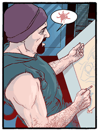
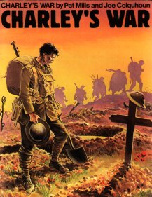

Al Davison is best known for his graphic novel The Spiral Cage, describing his life living with spina-bifida.  He has also been published by Titan Books, DC Comics, Dark Horse comics, Victor Gollancz, Wizards of the Coast, Sherpa (Amsterdam) amongst others, with titles such as Hellblazer, The Dreaming, Tainted, Vermillion, The Minotaur's Tale, Underground & Hardlooks. His most recent book Spiral Dreams is Al's illustrated dream diary: Al is a member of The Somnambulists, an Art movement that draws its inspiration from Dreams (other members include Rick Vietch, Sasa Racezic and Phil Yeh).
Al is also a Black Belt in Karate, and an assistant instructor in Shaolin Kung-Fu and runs an organisation called Martial Hearts to teach Martial Arts to the disabled. He works with Labyrinth Theatre as a set and costume designer, fight choreographer/fitness trainer, writer and sometime performer.
He has his own web site, The Astral Gypsy
An important figure in the history of British comics. He was creator and first editor of 2000AD, and has continued to write for it (‘Judge Dredd’, ‘Sláine’, ‘Nemesis the Warlock’). Before this he edited and contributed to a number of girls’ comics in the 1970s (Misty, Tammy, Jinty). Later, he created and wrote for Action and Battle, taking the opportunity to produce what he considers one of his strongest and best stories: the anti-war story published in a war comic, ‘Charley’s War’. Later highlights include 80s/90s British weekly comic Crisis for which he wrote the lead strip, and the US-based Marshal Law (co-created with Kevin O’Neil). He is currently writing for the continental European market and for 2000AD.